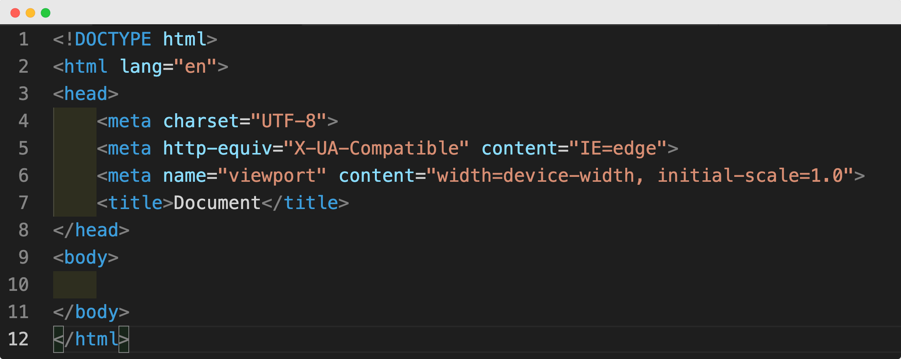

Note : Si vous êtes sous Linux le fichier .deb.
Si vous êtes sous Windows 7, vous ne pourrez pas installer la dernière version de VS Code, il vous faudra installer la version 1.70. C'est la dernière version à gérer Windows 7.
Ecrivez "html:5" puis appuyez sur la touche "entrée"
Vous devriez obtenir quelque chose comme ceci :
